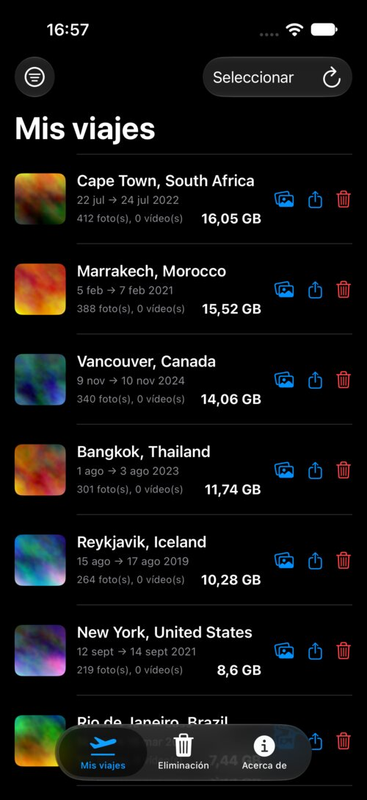
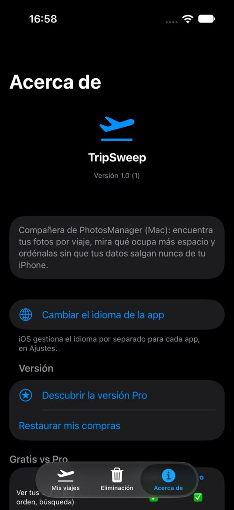

Por fin una forma sencilla de ordenar los viajes antiguos
TripSweep agrupa tus fotos y vídeos por estancia, para que veas exactamente qué ocupa espacio, lo guardes o se lo envíes a quienes estuvieron allí, y luego lo elimines en un gesto — sin enviar nunca tus datos a ningún sitio.
→ Descubre también PhotoCull para Mac, la aplicación de escritorio que ordena tus fotos

Un vistazo a la app

Qué hace la app
Elimina viajes antiguos sin pensarlo dos veces
Descubre exactamente cuánto ocupa una estancia y luego elimínala de una vez — siempre a través de «Eliminados recientemente», nunca una eliminación definitiva inmediata.
Guárdalo, o envíaselo a quien estuvo allí
Exporta toda una estancia a tu Mac o a Archivos antes de eliminarla, o compártela directamente (AirDrop, Archivos...) con amigos y familiares — nada se pierde para siempre.
Agrupación automática por estancia
Tus fotos y vídeos se agrupan por viaje — teniendo en cuenta tanto el tiempo como el lugar, para no mezclar nunca dos destinos distintos.
El tamaño que importa
Cada estancia muestra el espacio que ocupa. Ordena por tamaño para detectar de un vistazo lo que realmente vale la pena ordenar.
Lugares personalizados
Define tus lugares (Casa, Trabajo...) y exclúyelos de la lista para conservar solo los viajes reales.
100% sin conexión
Ninguna foto ni ubicación sale nunca de tu iPhone. El reconocimiento de lugares funciona completamente sin conexión, sin cuenta y sin servicios de terceros.
Disponible en 5 idiomas
Francés, inglés, italiano, alemán, español — la app se adapta automáticamente al idioma de tu iPhone.
Tu privacidad, tomada en serio
TripSweep nunca recopila, envía ni comparte tus fotos, vídeos o datos de ubicación. Todo el procesamiento — incluido el reconocimiento de lugares — se realiza localmente en tu iPhone.
Leer la política de privacidad completa